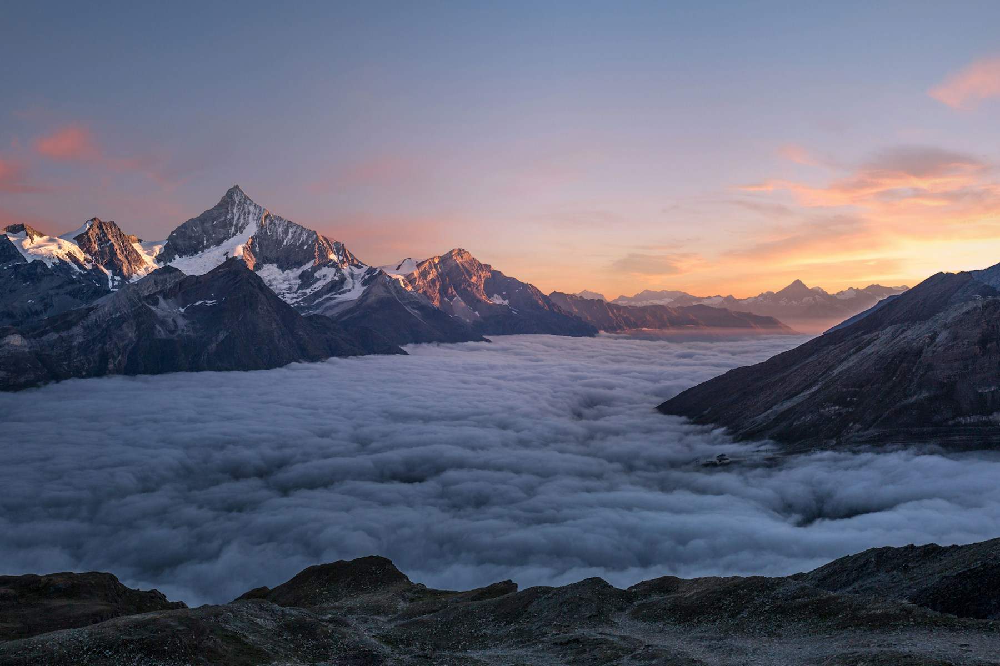
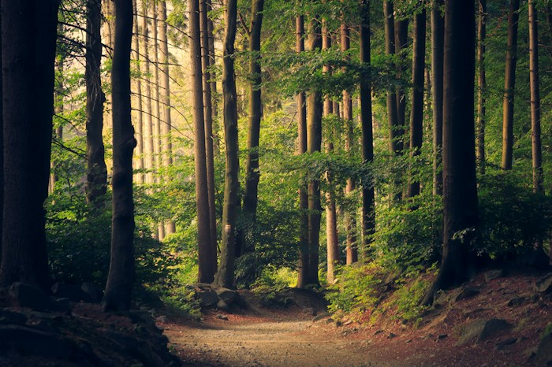
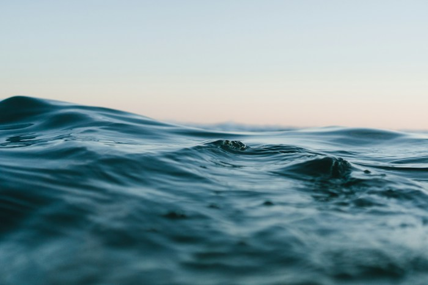
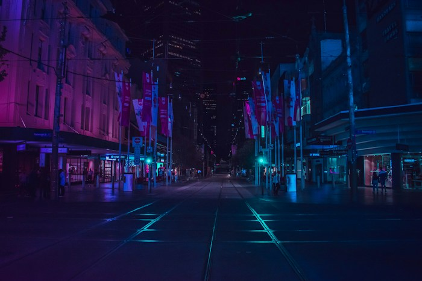
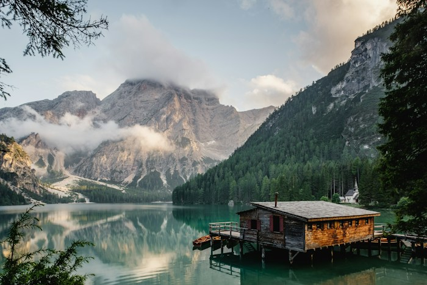
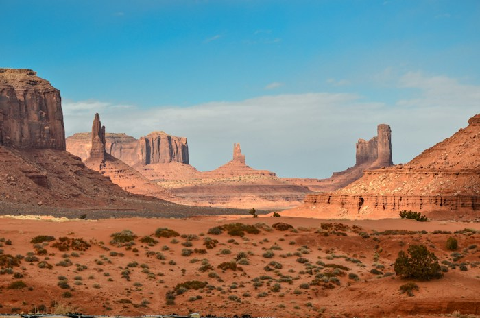
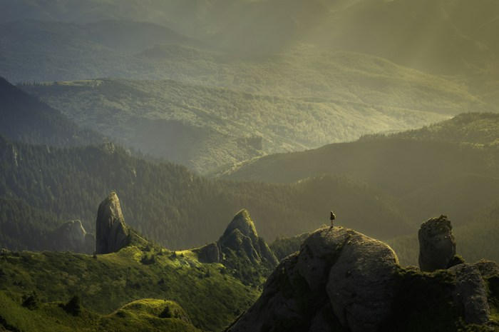
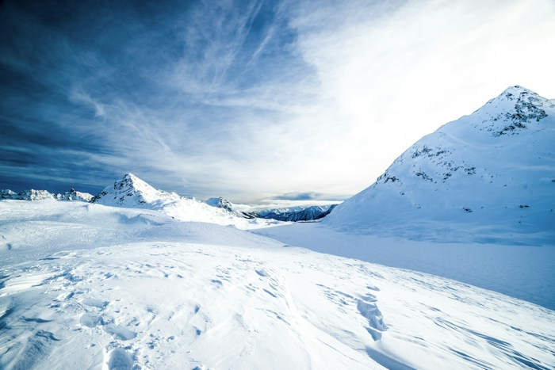

12+Приключения · 2026
В центре внимания 01 / 08
CINEFLOW ORIGINAL
Затеряться среди гор. Услышать тишину.
Увидеть привычный мир с
другой стороны.
Северный маршрут · Большое путешествие начинается здесь
Вернуться к истории

12+Приключения · 2026

6+Документальный · 2025

6+Документальный · 2026

16+Драма · 2025
Есть что посмотреть
Сохраняйте фильмы нажатием на сердечко

12+Драма · 2026

12+Приключения · 2025

6+Путешествия · 2026

0+Документальный · 2025
В списке пока пусто. Выберите «Все фильмы» и отметьте понравившуюся историю сердечком.
Под настроение
В хорошем качестве
Собирайте свою подборку и находите новые истории.
Большой
экран начинается с хорошего выбора.
Удобная страница на компьютере и телефоне
Отмечайте любимые фильмы в каталоге
Природа, путешествия и неспешные истории
Приключения · 2026 · 12+
Экспедиция в горы превращается в путешествие навстречу себе. За последним перевалом герои находят то, ради чего стоило выйти из дома.
Вымышленный фильм. Видеозапись в учебном макете не размещена.
Вернуться к подборкеДокументальный · 2025 · 6+
Один год в древнем лесу. Неспешная история о больших деревьях, маленьких обитателях и связях, которые мы редко замечаем.
Вымышленный фильм. Видеозапись в учебном макете не размещена.
Вернуться к подборкеДокументальный · 2026 · 6+
От спокойной поверхности до глубин океана. Красота воды становится поводом поговорить о сохранении нашей планеты.
Вымышленный фильм. Видеозапись в учебном макете не размещена.
Вернуться к подборкеДрама · 2025 · 16+
Случайная встреча под звёздным небом меняет планы двух незнакомцев. У них есть одна ночь, чтобы решиться на перемены.
Вымышленный фильм. Видеозапись в учебном макете не размещена.
Вернуться к подборкеДрама · 2026 · 12+
После долгого отсутствия фотограф возвращается к озеру своего детства. Старый дом, забытые письма и новый взгляд на знакомые места.
Вымышленный фильм. Видеозапись в учебном макете не размещена.
Вернуться к подборкеПриключения · 2025 · 12+
Через бескрайние пески пролегает дорога к затерянной станции. История о дружбе, взаимопомощи и умении слышать друг друга.
Вымышленный фильм. Видеозапись в учебном макете не размещена.
Вернуться к подборкеПутешествия · 2026 · 6+
Дорога, уходящая в горы, соединяет маленькие истории местных жителей. Фильм о путешествиях без спешки и открытости миру.
Вымышленный фильм. Видеозапись в учебном макете не размещена.
Вернуться к подборкеДокументальный · 2025 · 0+
Северная природа меняется с приходом зимы. Наблюдение за светом, тишиной и жизнью в суровом, удивительно красивом мире.
Вымышленный фильм. Видеозапись в учебном макете не размещена.
Вернуться к подборке